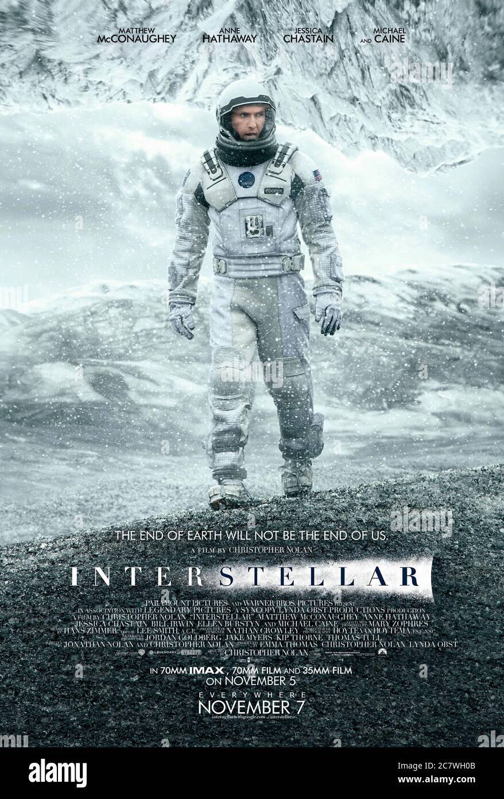

intersteller
- over view
 Movie Genre: Adventure, Drama, Sci-Fi
When Earth becomes uninhabitable in the future, a farmer and ex-NASA pilot, Joseph Cooper, is tasked to pilot a spacecraft, along with a team of researchers, to find a new planet for humans.
- Ranking & Trailer
- ⭐8.7/10 2.1M Official Trailer
- Casts
- Movie Link
የወንዶች ጉዳይ(ye wendoch guday)
- over view

Movie Gener:Romance,comedy,Drama
Ethiopian First Romantic comedy Amharic movie first released in 2007 and The next part in 2013 which based wood workers and their love life
- Ranking
- ⭐9.0/10 17
- Casts
- Movie Link
Avatar
- over view
_poster.jpg)
Movie Gener:Action,Adventure,fantasy
A paraplegic Marine dispatched to the moon Pandora on a unique mission becomes torn between following his orders and protecting the world he feels is his home.
- Ranking & Trailer
- ⭐7.9/10 1.4M Official Trailer
- Casts
- Movie Link
The green mile
- over view
.jpg)
Movie Gener:Crime,Drama,fantasy
A tale set on death row, where gentle giant John Coffey possesses the mysterious power to heal people's ailments. When the lead guard, Paul Edgecombe, recognizes John's gift, he tries to help stave off the condemned man's execution.
- Ranking & Trailer
- ⭐8.6/10 1.4M Official Trailer
- Casts
- Movie Link
kung fu panda
- over view
Movie Gener:Action,Adventure,Animation
The "Kung Fu Panda" movie series follows the adventures of Po, an unlikely hero; a clumsy panda bear who discovers he is the prophesied Dragon Warrior destined to protect the Valley of Peace. Alongside his friends and mentors, the Furious Five and Master Shifu, Po battles various villains that threaten their way of life, using his martial arts skills and the wisdom of kung fu
- Ranking & Trailer
- Kung fu panda 1 ⭐7.6/10 518K Official Trailer
- Kung fu panda 2 ⭐7.3/10 317K Official Trailer
- Kung fu panda 3 ⭐7.1/10 186K Official Trailer
- Casts
- Movie Link
The Shawshank Redemption
- over view

Movie Gener:Drama
Framed in the 1940s for the double murder of his wife and her lover, upstanding banker Andy Dufresne begins a new life at the Shawshank prison, where he puts his accounting skills to work for an amoral warden. During his long stretch in prison, Dufresne comes to be admired by the other inmates -- including an older prisoner named Red -- for his integrity and unquenchable sense of hope.
- Ranking & Trailer
- ⭐9.3/10 2.9M Official Trailer
- Casts
- Movie Link
- over view
Movie Gener:Romance, Drama
A wealthy businessman tries to buy land for a new factory, but develops a complicated relationship with the young woman who owns the land.
- Ranking & Trailer
- ⭐8.1/10 12 Official Trailer
- Casts
- Movie Link
Inception
- over view
_theatrical_poster.jpg)
Movie Gener:Action, Sci-fi, Adventure
A thief who steals corporate secrets through the use of dream-sharing technology is given the inverse task of planting an idea into the mind of a C.E.O., but his tragic past may doom the project and his team to disaster.
- Ranking & Trailer
- ⭐8.8/10 2.5M Official Trailer
- Casts
- Movie Link
The platform
- over view
Movie Gener:Horror, Sci-fi, Crime
A vertical prison with one cell per level. Two people per cell. Only one food platform and two minutes per day to feed. An endless nightmare trapped in The Hole.
- Ranking & Trailer
- ⭐7.0/10 270k Official Trailer
- Casts
- Movie Link
Edge of Tommorrow
- over view

Movie Gener:Action, Sci-fi, Adventure
A soldier fighting aliens gets to relive the same day over and over again, the day restarting every time he dies.
- Ranking & Trailer
- ⭐7.9/10 733k Official Trailer
- Casts
- Movie Link